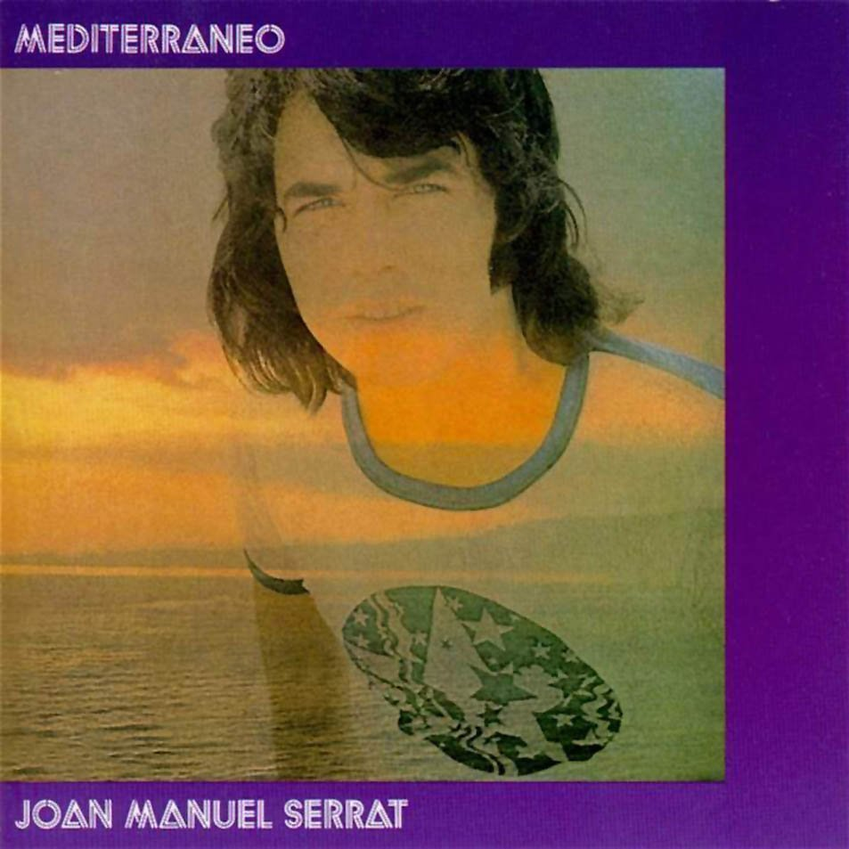

“Mediterráneo” es considerada una de las canciones más trascendentales en la historia
musical debido a la magistral combinación de poesía y melancolía que Joan Manuel Serrat
logra plasmar en cada acorde y letra. La canción es un viaje lírico a través del tiempo y el
espacio, donde la riqueza de las palabras de Serrat se entrelaza con una melodía cautivadora
que resuena con la esencia del Mediterráneo. La canción captura la esencia de la vida
mediterránea, su historia y su gente, convirtiéndose en un himno atemporal que trasciende
fronteras y generaciones. La obra no es solo una oda a la geografía y la cultura de la región,
sino también una exploración profunda de las emociones humanas, evocando sentimientos de
amor, pérdida y añoranza. Serrat concuerda una capacidad extraordinaria para capturar la
esencia de la vida mediterránea y traducirla en una pieza musical atemporal, elevando la
canción a un estatus icónico. Su resonancia perdura a lo largo de las décadas, trascendiendo
barreras lingüísticas y generacionales. Por eso es nuestra canción de la semana.